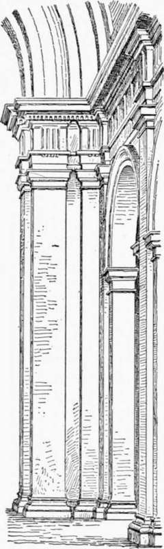

Church Architecture Of The Roman Renaissance. Part 6
Description
This section is from the book "Character Of Renaissance Architecture", by Charles Herbert Moore. Also available from Amazon: Character of Renaissance Architecture.
Church Architecture Of The Roman Renaissance. Part 6
On reflection we discover that the scheme suggests a derivation from the Pantheon. Not only is the dome shaped and of Corinthian pilasters surmounted by a classic pediment, and the entablature of the order is returned on the sides of the building. The effect of the whole may be compared to that of a Greek temple with an attic supporting a dome built upon it. So awkward is the combination that it might be supposed to be a piece of patchwork in which a building of Greek temple form had been altered to gain more height within, were it not that adjusted as in that ancient monument, save for its oval plan, but the rest of the composition is pretty clearly from the same source. To realize this it is necessary only to eliminate, in idea, the portico of the Pantheon with the exception of its pediment, and to conceive this pediment as drawn back into the plane of the rectangular facade. The pediment would then surmount the order of Corinthian pilasters which adorn this facade, and the resulting composition would be substantially identical with that of the facade of St. Andrea. The minor differences are unimportant, as where Vignola has placed a pair of pilasters, instead of only one, at each end of the facade, has given the whole order more shallow relief, and has omitted the fluting on the pilasters. Even the niches on either side of the portal are reproduced from the Pantheon, though Vignola has pierced them with windows.
1 The drawings are found in the addendum to the edition of 1617, plates 7 and 8.
The likeness extends farther. The return of the entablature along the side walls and the cornice of the attic are the same in both instances; but the second pediment in the Pantheon facade Vignola has not reproduced. St. Andrea is thus a close, though a modified, copy of the rectangular part of the Pantheon, with the rectangle elongated and surmounted by a dome designed on the Pantheon model. It was not known in the sixteenth century that the ancient monument is not a homogeneous structure, but an awkward patchwork, the result of successive alterations and additions.1 Vignola took it entire as an example of that ancient style which he regarded as authoritative, and based his design for St. Andrea upon it, just as many modern architects have taken motives from Vignola himself. If it were proposed to erect a dome upon the Parthenon, few people would fail to see that the result would be an architectural monstrosity, yet this would not be very different from what was done in St. Andrea by an architect who has been looked upon as a champion of classic correctness in design.
M. Palustre has called attention to the fact that, in the interior of St. Andrea (Fig. 45), the two parts of the entablature which have no raison d'etre under a vault have been omitted.2 But the impropriety of a complete entablature in connection with vaulting is no greater than that of any part of a classic order, which has no justification in such connection, as we have already remarked.
The pilgrimage church of Santa Maria degli Angeli, built over the oratory of St. Francis at Assisi, is a more extensive monument which was begun by Vignola in the year 1569. Though completed by other architects, and extensively restored in 1832, the building as it now stands is uniform in style throughout, and bears the marks of Vignola's manner of design. It is cruciform in plan, with a long nave and aisles, and a square chapel opening out of each bay of each aisle. The nave and transept have barrel vaulting, a half-dome covers the apse, and a dome on a high drum resting on pendentives rises over the crossing. The aisles have domical groined vaulting with transverse ribs, and the side chapels have barrel vaults with their axes perpendicular to that of the nave. These chapels thus form abutments to the inner vaulting, so that no external buttresses are needed. The entire fabric is of brick, but the details, including the orders of the interior, of the west front, and of the drum, are wrought in stucco. For the interior the architect has employed a great order of Doric pilasters, a single pilaster on the face of each pier, and on the sides of the piers, under the aisle archivolts, he has placed pairs of smaller pilasters. The soffits of the archivolts are very wide, and have each a pair of salient sub-archivolts corresponding with the pilasters. It had been common for the architects of the Roman Renaissance to break the entablature into ressauts over the columns or pilasters of the orders when used in this way, as San Gallo had done in Montepulciano and Michael Angelo in St. Peter's. But the effect of thus breaking the continuity of the cornice line is unpleasing, and Vignola has avoided it here by confining the ressaut to the architrave, frieze, and bed-mouldings, leaving the corona of the cornice unbroken as in Figure 47. The great piers of the crossing show the influence of St. Peter's in being splayed, and the forms of the pendentives lose their spherical surfaces in being fitted to the straight line of the splay, as they do in St. Peter's. The design of the facade expresses with unusual truthfulness the divisions of the interior," which are marked by pilasters like those of the great order within, and by an arch coinciding with the curve of the vaulting.
1 Recent investigations, the results of which are set forth by Signor Beltrami (Il Pantheon, Luca Beltrami, Milan, 1898), have shown that the existing portico is of later date than either the rotunda or the rectangular front against which it is set.
2 "A l'interieur, pourtourne de pilastres egalement Corinthiens, deux parties de l'entablement qui n'ont pas leur raison d'etre sous une voute, c'est-a-dire la frise et la corniche, par un raffinement peu habituel aux Italiens, ont ete supprimees." E Architecture de la Renaissance, par Leon Palustre, Paris, Quantin, p. 72.
Fig. 47. — Order of Santa Maria degli Angeli.
Continue to:
- prev: Church Architecture Of The Roman Renaissance. Part 5
- Table of Contents
- next: Church Architecture Of The Roman Renaissance. Part 7